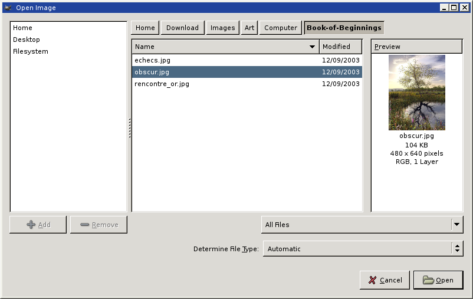

Mini-Review: the Gtk+ 2.4.x File Chooser
Important Note!
This review represents my uneducated impression from the dialogue after playing with it for a while as it is. I was eventually referred to its specification where I learned that they were some features in it that I missed. The up-to-date review remedies that.
The review as it was written
Well, GIMP now requires gtk+-2.4.x and part of the reason were the much anticipated and improved file choice dialogue. Having installed it, I now have to use it when I’m editing files using GIMP. I also was looking forward for something quite decent. So here’s my review.
First of all it looks something like this:
There is the file choice list view that occupies the centre of the screen. There are the directory components at the top. There are some bookmarks to the left (you can add more by pressing the Add button, but only the last component is displayed). There is the filter at the bottom. And there are the Open and Cancel buttons.
Now here are the problems I encountered with it:
- After entering the home directory, the upper components (“home” and “shlomi”) are deleted and there’s no way to go up except for selecting the “Filesystem” bookmark. (which leads you straight to “/”).
- There is no up button. You need to press the last component at the top, to go up.
- There is no entry for filename. You can’t type the filename for goodness’ sake. Furthermore, even pressing the letter keys in the listbox does nothing. The keyboard can be used with tab, shift-tab, up, down, etc, but I want more.
- You cannot rename the bookmarks. You are left with the last component of the directories to which they point.
- The right mouse button does absolutely nothing anywhere within the dialogue.
- The files filter only has descriptions and no extensions. This may be a GIMP-specific problem.
- There are no columns in the files list-view except “Name” and “Modified”, and there’s no way to add more. You can’t even tell if a file is a file or a directory!
In short, this is one of the worst file choosing dialogues, I have ever laid eyes on. It’s worse than Gtk+ 1.2.x’s (checked now with GIMP 1.2); worse than Windows and even Mozilla. And it’s a far cry from KDE’s file-choice dialogue, which is the best one I know of.
It is possible that the GNOME 2.4.x file-choice dialogue is better. I can’t tell, because I did not try GNOME 2.4.x yet. In any case, this is another proof that the GNOME people are clueless in regard to how to design a good GUI. They could if they wanted to, but instead they are following their HIG (or Horrible (ok, “Human”) Interface Guidelines), which leads them into greater and greater depths of lack of usability. Even the conversion to the Spatial interface have made me flabbergasted, because I recall it was the first thing I cancelled in Windows 95. (and never enabled it afterwards). And in GNOME, one needs to issue an obscure gconf command to disable it. (where in Windows 95, it was somewhere clear in the options dialogue box).